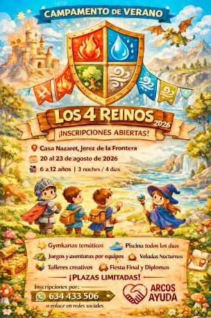
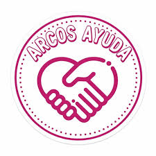
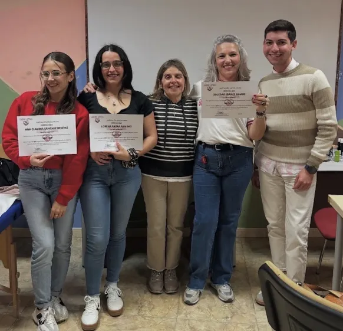
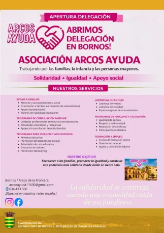
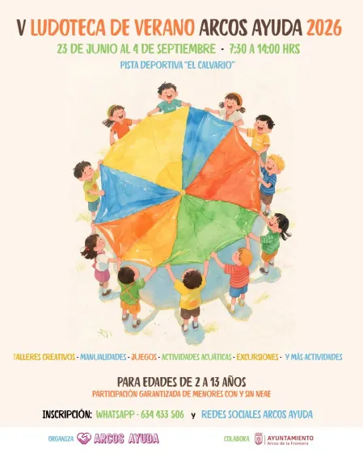

Agosto 2026Campamento de Verano: Los 4 Reinos
Inscripciones abiertas para niños de 6 a 12 años del 20 al 23 de agosto de 2026 en Casa Nazaret, Jerez.
Más información →
Arcos Ayuda es una asociación sin ánimo de lucro creada en el año 2019. Comenzamos con la recogida de alimentos, juguetes y material escolar para personas en situación de vulnerabilidad.
Tras constituirnos formalmente en 2021, hemos realizado innumerables actuaciones dirigidas a la población arcense: cursos de formación, búsqueda de empleo, voluntariado con mayores y apoyo a refugiados.
Nuestra finalidad es luchar contra la desigualdad y la pobreza en el territorio arcense, cubriendo necesidades básicas e implantando programas sociales para infancia, mayores y diversidad funcional.
Inscrita en el Registro de Asociaciones de Andalucía (Nº 14481). Entidad de Servicios Sociales desde el 04/06/2024.


Junta de Andalucía

Diputación de Cádiz

Ayuntamiento de Arcos

Agosto 2026Inscripciones abiertas para niños de 6 a 12 años del 20 al 23 de agosto de 2026 en Casa Nazaret, Jerez.
Más información →
ActualidadAmpliamos nuestra red de apoyo social ofreciendo ludotecas, refuerzo educativo y atención a familias en la nueva sede.
Ver servicios →
Junio - SeptTalleres, juegos y actividades del 23 de junio al 4 de septiembre para edades de 2 a 13 años.
Inscribirse →
¡Únete a nuestra comunidad en Facebook! Compartimos eventos, álbumes de fotos de los talleres y comunicados oficiales.
Visitar Página
¡Síguenos para no perderte nuestro día a día, fotos de los talleres y las últimas novedades!
Ver Perfil Oficial